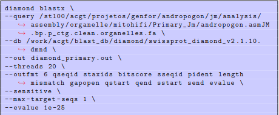

Disclaimer
Faz tempo que não trago atualizações da minha montagem, tinha rodado esse software (BlobToolsKit) e me deparei com algumas problématica, foi bem difícil lapidar um resultado bom, visto que esse software tem varias etapas, e precisa de vários outros documentos para funcionalidade total do programa, consegui rodar para a montagem prímaria e chegar em resultados bons e plots bem interessantes. Enquanto escrevo esse post, to rodando ele para minhas outras montagens (na verdade to rodando o Blast diamond, que me gerará um output necessário para o Btk).
Introdução
O BlobToolsKit é um programa utilizado para identificar contaminantes, para isso ele utliza dois parametros, conteúdo GC (porcentagem de Citosina e guanina nas contigs) Sabemos que organimos diferentes tem essas taxas diferentes por exemplo: Bactérias de uma espécie X tem ~60 porcento enquanto, um fungo de uma especie Y tem apenas ~30 porcento. Posteriormente a essas medidas de contigs, o programa utiliza os hits do Blast diamond para determinação taxonomica de cada uma das contigs presentes na minha montagem. Além da taxa GC explicada acima, o software utiliza o sistema de cobertura, ou seja, quanto cada contig foi lido no sequenciador. Sequencias como de DNA plastidial tem uma cobertura muito alta, por estarem presentes em varios fragmentos sequenciados, essa região é descartada para a montagem o dna nuclear. (O principio disso está bem explicado no post do MITOHIFI, software desenvolvido para essas regiões de genoma de organelas.) Para o cálculo dessa cobertura utilizamos de input um arquivo gerado binario .BAM advindo do Minimap2. Depois que adicionamos esses inputs temos um plot da nossa montagem.
Minimap2 Para rodar o BlobTools tive que primeiramente, alinhar minha sequencia para gerar um arquivo BAM que foi utilizado para taxa de cobertura. Pra isso fiz um MiniMap2, e depois gerei o BAM com o SamTools. Para isso foi usado o ambiente conda (Minimap2)
|

Blast Diamond
Precisamos alinhar nossa sequˆencia para funcionamento do blobtools, que utiliza esse arquivo para: criar an´alises de todos os hits presentes e atribuir uma taxonomia para cada sequˆencia na montagem. Utilizei o diamond blast, com um banco de dados de proteomas e alinhei com o nosso fasta. Felizmente, esse processo foi simplificado, por termos um banco de dados j´a criado no servidor do LBI. Para isso foi usado o ambiente conda (Diamond).
Caminho:
Problematica:
Tivemos um problema com o runtime, como nosso query ´e um arquivo grande, o diamond enfrentou alguns problemas em ”Computing alignments”(o processo demorou muito tempo, pelo tamanho do arquivo de entrada). Tal problemática foi descrita também em: GITHUB do problema
Comandos do Blast Diamond:

BlobToolsKit
Posteriormente a todos esses pré-requesitos, finalmente rodei o Btk. Todos os comandos abaixo foram rodados em um ambiente conda (Btk)
Criação do diretorio:

Adicionando Hits advindos do Blast Diamond:

Adicionando cobertura:

Posteriormente, temos que criar um servidor local para sermos capazes de vizualiar os plots.
Disparando API:

Disparando visualizador:

Depois de disparamos o API e o visualizador, basta abrir o local server que foi hosteado na portaria 8880 no nosso caso: http://localhost:8881/view/all
Resultados
Foi um processo bem trabalhoso mas os plots foram incríveis, sendo o BTK um dos melhores softwares de vizualição de montagem que eu já utlizei, amei o processo, tive que pensar bastante em cada etapa, levando em consideração a complexidade do meu genoma tetraploíde.
Plots

Figura 1: Plot do Btk (BlobToolsKit) referente a montagem primaria.

Figura 2: Lista de poss´ıveis contaminantes na montagem Primaria